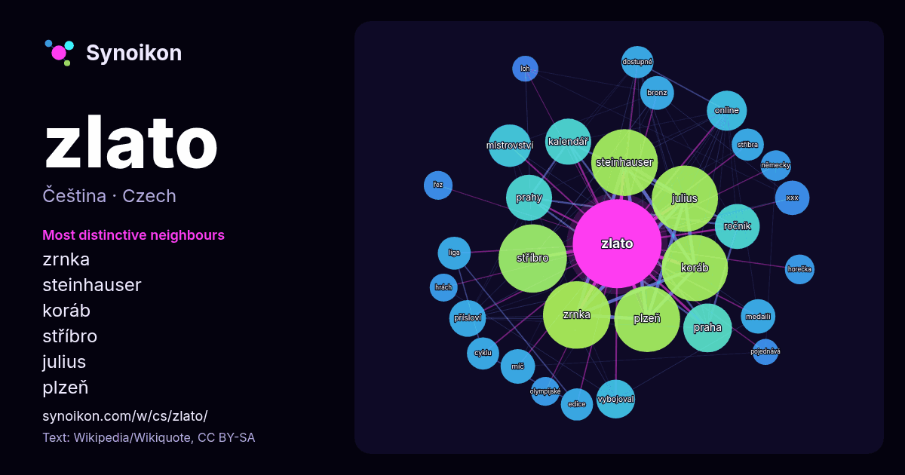

Čeština · seznam slov dne
zlato
“gold” · Slova v jeho okolí z 1248 výskytů na Wikipedii, Wikiquote.

Nejtypičtější sousedé
- zrnka 80×
- steinhauser 78×
- koráb 77×
- stříbro 76×
- julius 73×
- plzeň 69×
- kalendář 39×
- ročník 30×
- přísloví 26×
- online 25×
- vybojoval 25×
- prahy 23×
- xxx 23×
- míč 21×
- bronz 21×
- praha 20×
- liga 19×
- stříbra 19×
- edice 18×
- mistrovství 18×
× = kolikrát častěji než v běžném textu Wikipedie.
Nejčastější sousedé
- stříbro 90
- zrnka 88
- steinhauser 86
- julius 85
- koráb 85
- plzeň 84
- praha 46
- roce 43
- kalendář 41
- prahy 41
- ročník 39
- mistrovství 35
- online 31
- vybojoval 29
- získal 29
- světa 27
- přísloví 26
- medaili 23
- míč 23
- xxx 23
V kontextu
- Tento článek je o kovovém prvku. O minerálu pojednává článek Zlato (minerál). Zlato (chemická značka Au, latinsky aurum) je chemicky odolný, velmi dobře Wikipedia snippets · Zlato
- Zatímco ryzí zlato je žluté barvy, barevné zlato může být vyrobeno v různých barvách. Tyto barvy jsou obecně vytvořeny slitinou zlata s dalšími chemickými Wikipedia snippets · Barevné zlato
- zvuky či videa k tématu Zlato Rýna na Wikimedia Commons Zlato Rynaz / Rheingold : online průvodce operou v českém jazyce Zlato Rýna v databázi Archivu Wikipedia snippets · Zlato Rýna
- Sůl nad zlato (slovensky Soľ nad zlato, italsky Il principe del sale, německy Der Salzprinz) je koprodukční pohádkový film natočený na motivy stejnojmenné Wikipedia snippets · Sůl nad zlato (film)
- Mackennovo zlato na Wikimedia Commons Mackennovo zlato v Česko-Slovenské filmové databázi Mackennovo zlato ve Filmové databázi Mackennovo zlato v iVysílání Wikipedia snippets · Mackennovo zlato
- světové válce. Do té doby sloužilo zlato uložené ve státních bankách jako zlatý standard. Centrální banky držely fyzicky zlato, aby jím garantovaly hodnotu Wikipedia snippets · Investiční zlato
- Creeku. Díky Hendersonovu vyprávění zároveň hledali v potoce zlato. 16. srpna 1896 zlato skutečně našli. Naleziště bylo mnohem vydatnější než všechny Wikipedia snippets · Zlatá horečka na Klondiku
- Promnic (1539–1562). Zlatohorské zlato slouží k ražení biskupské mince, která se stala rozšířeným platidlem; vedle zlata se těží i měď, olovo a cín. V letech Wikipedia snippets · Zlaté Hory
Další slova
Předpočítáno 2026-10-09 s výchozím nastavením (±5 slov, střední korpus). Interaktivní mapa ho může obnovit živými daty.
Strojově přeložené rozhraní; opravy vítány.